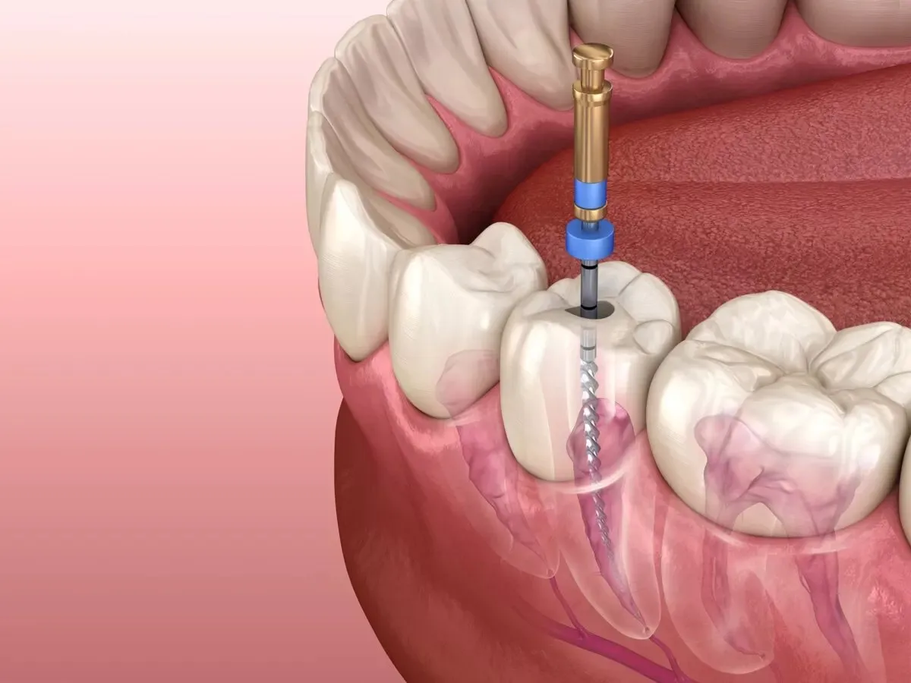

Endodoncia: Conserva tu sonrisa con salud dental
La endodoncia es un procedimiento dental especializado diseñado para salvar dientes que están gravemente dañados o infectados. Cuando la pulpa dental, el tejido interno del diente que contiene los nervios y los vasos sanguíneos, se ve comprometida por caries profundas, fracturas dentales o traumas, es vital intervenir para evitar la extracción del diente y preservar la salud dental a largo plazo.
Durante una endodoncia, nuestro equipo altamente capacitado realiza una serie de pasos cuidadosos para tratar la pulpa dental infectada o dañada. Primero, se realiza una evaluación completa para determinar la extensión del daño y la necesidad de tratamiento. Luego, se administra anestesia local para garantizar la comodidad del paciente durante el procedimiento.
Una vez que el área esté adormecida, se realiza una pequeña apertura en la parte superior del diente para acceder a la pulpa dental. La pulpa infectada o dañada se elimina cuidadosamente, y los conductos radiculares del diente se limpian, desinfectan y se llenan con un material sellador especial para prevenir la reinfección.
Una vez completada la endodoncia, el diente se restaura con una corona dental para devolverle su forma, función y apariencia naturales. Esto protege el diente tratado y ayuda a prevenir futuras complicaciones.
En nuestra clínica, entendemos la importancia de preservar tu sonrisa y tu salud dental. Nuestro equipo está comprometido a proporcionar cuidados compasivos y de alta calidad durante todo el proceso de endodoncia. Si experimentas dolor dental persistente, sensibilidad extrema o inflamación alrededor de un diente, te recomendamos que nos contactes para una evaluación. ¡No dejes que una infección dental arruine tu sonrisa! ¡Programa tu cita hoy mismo y descubre cómo la endodoncia puede ayudarte a mantener una sonrisa saludable y radiante!
